Plomeros de Medellín, para Medellín
Somos un equipo de técnicos certificados con más de ocho años resolviendo emergencias y proyectos de plomería en el Valle de Aburrá. Trabajo rápido, honesto y bien hecho.
- +8años de experiencia
- 24/7atención de emergencias
- 7municipios cubiertos
- 14tipos de servicio

Honestidad y trabajo bien hecho
Creemos en un servicio transparente: diagnóstico claro, precio antes de empezar y materiales de calidad. Nuestro equipo atiende emergencias las 24 horas porque sabemos que los problemas de plomería no esperan.
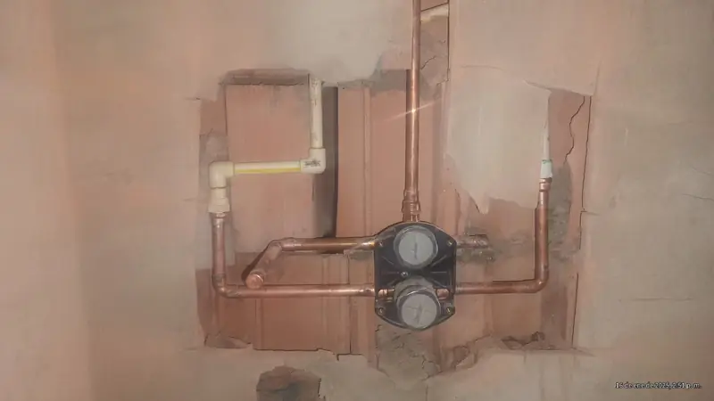
Técnicos certificados y en formación constante
Nuestro equipo tiene amplia experiencia en reparaciones, instalaciones y mantenimiento de redes hidráulicas, sanitarias y de gas. Nos capacitamos constantemente en materiales, normas y técnicas nuevas.
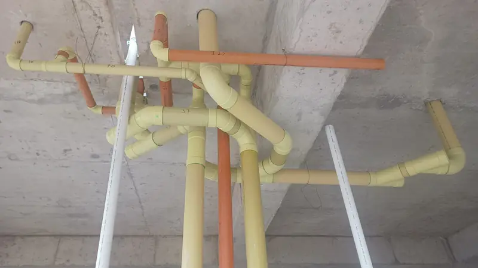
Del apartamento al edificio completo
Atendemos desde un goteo en la cocina hasta la red completa de un edificio en obra. Si buscas un servicio de plomería confiable, escríbenos: estamos listos para ayudarte.
Galería
Trabajos de plomería realizados en Medellín
Fotos reales de instalaciones, reparaciones y proyectos de nuestro equipo. Toca una foto para verla en grande.

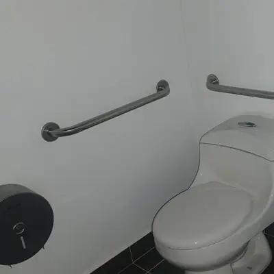

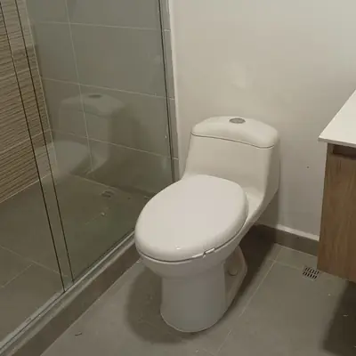

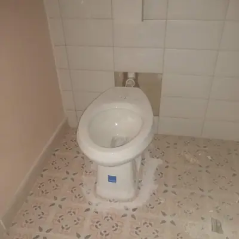

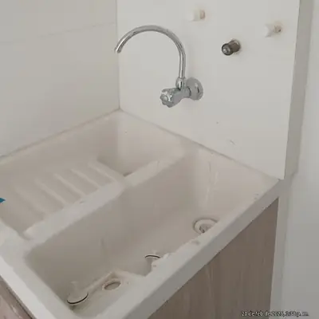

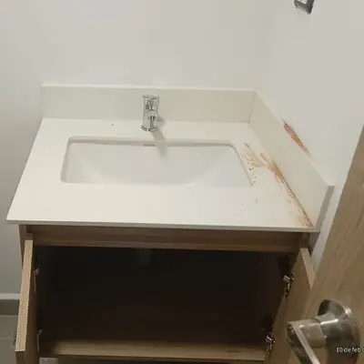

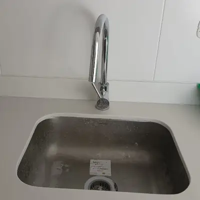

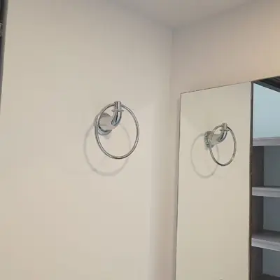

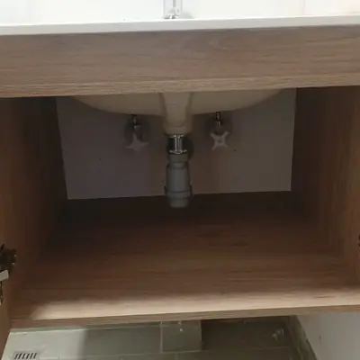

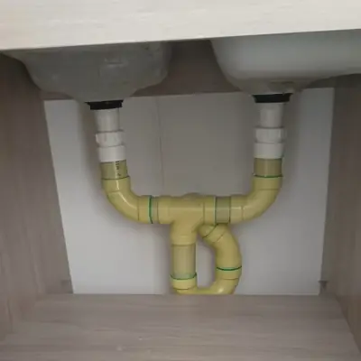

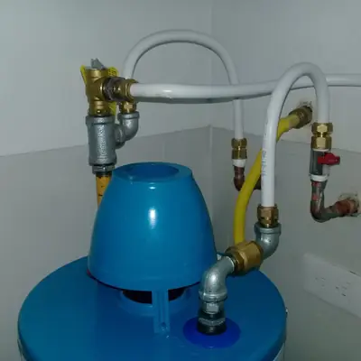

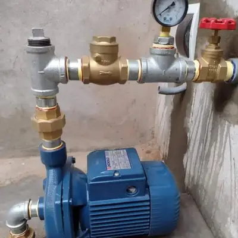

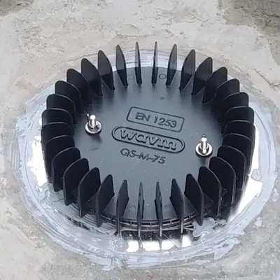

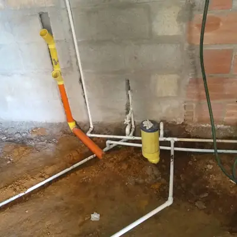

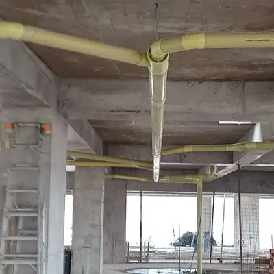

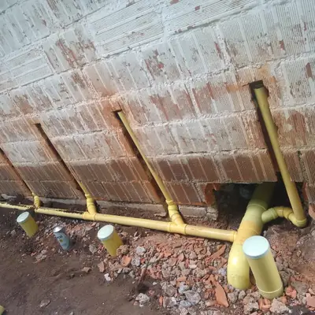

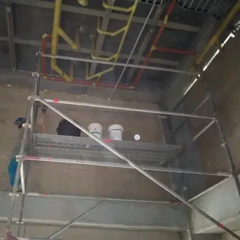

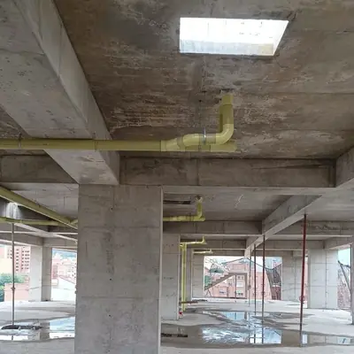

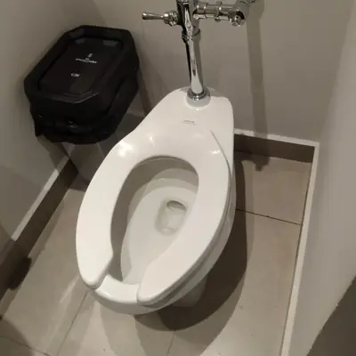

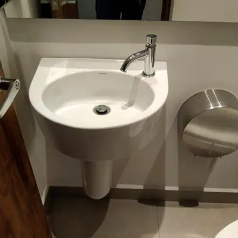

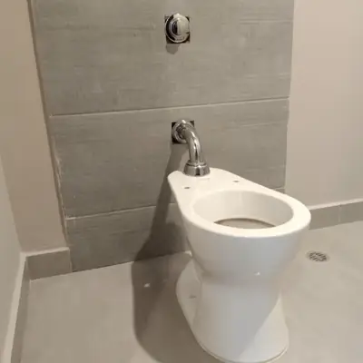

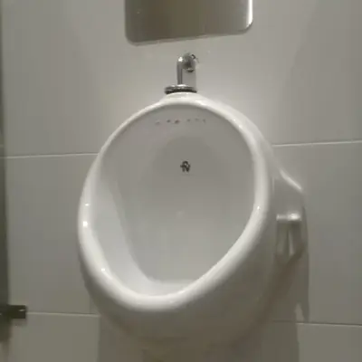

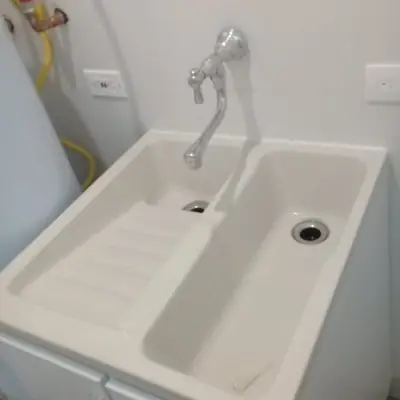

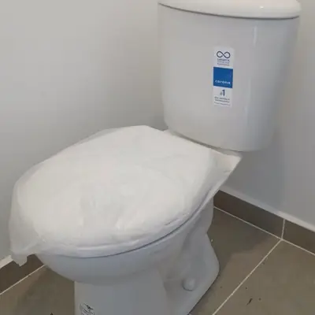

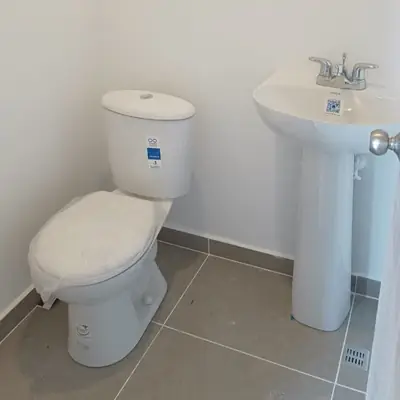

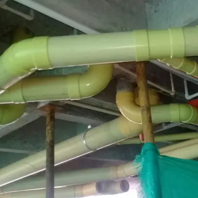

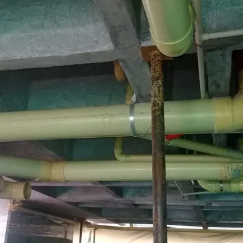

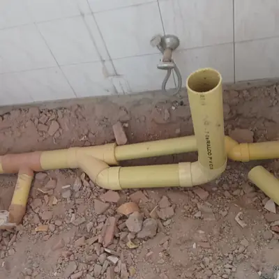

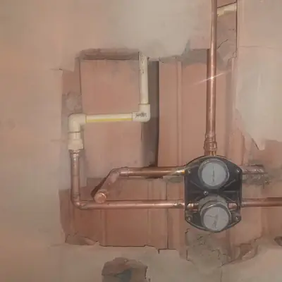

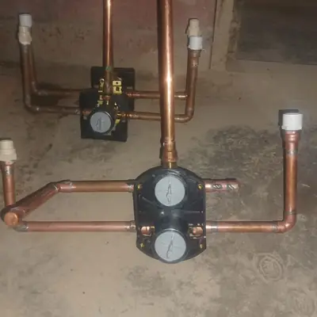

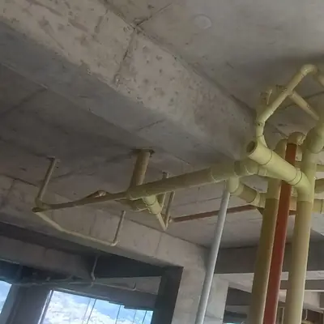

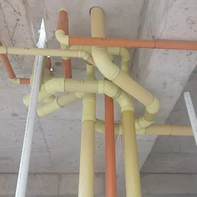

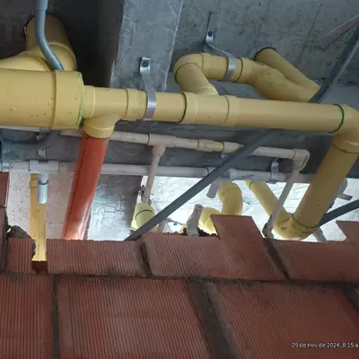

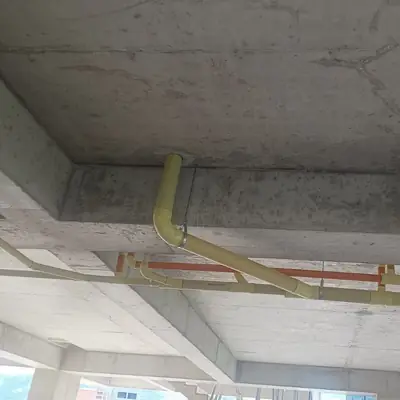

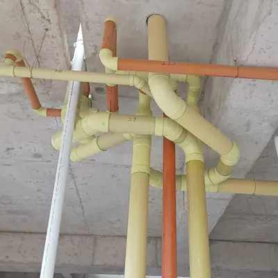

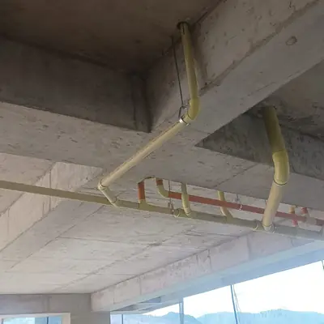

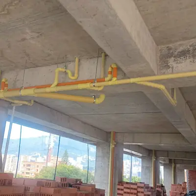

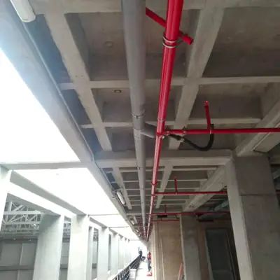

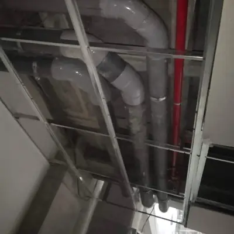

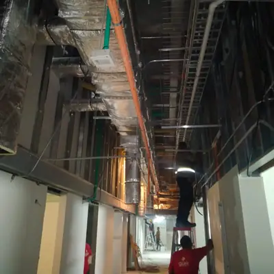

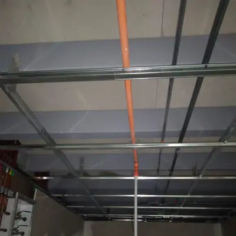

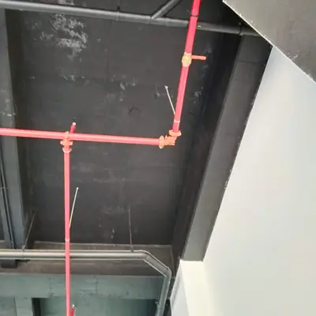

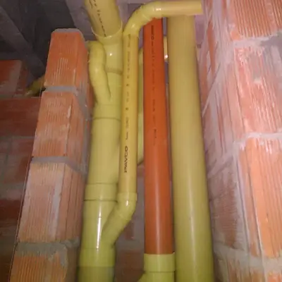

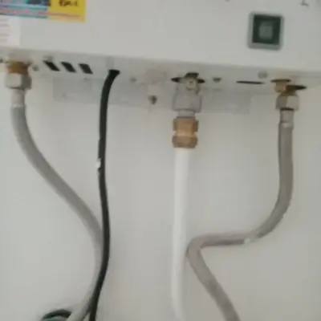

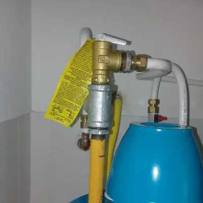

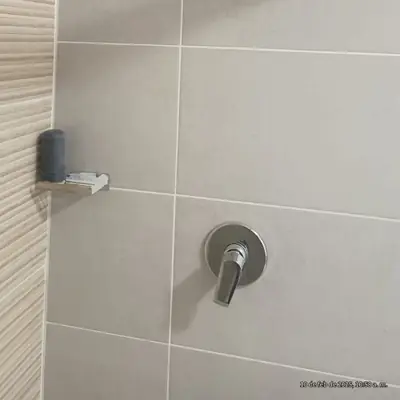

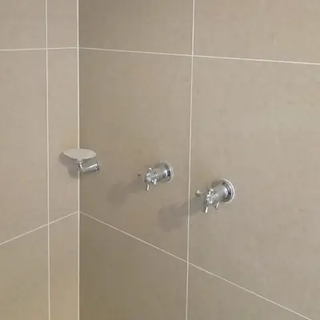

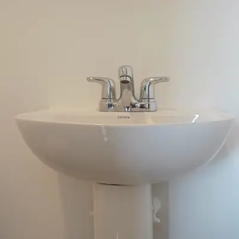

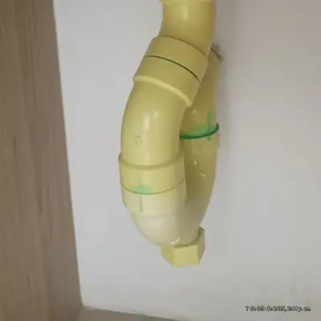


¿Quieres que hagamos tu próximo trabajo?
Cuéntanos qué necesitas y te enviamos un presupuesto sin compromiso.